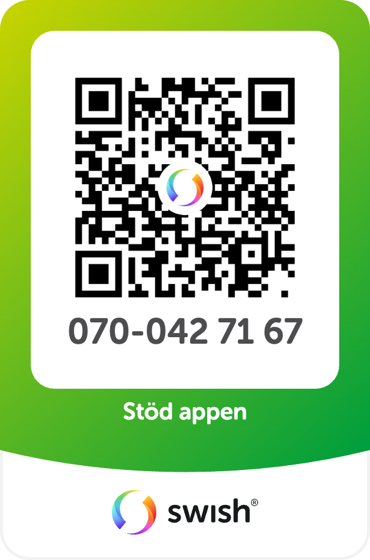

Stöd Drönarkarta
Appen är gratis och reklamfri — din donering hjälper till att hålla den uppdaterad och live!
Scanna med Swish-appen på din telefon:

Tryck för att öppna Swish-appen direkt.
Du väljer själv belopp.
Nummer: 070-042 71 67
Öppna i telefonen
Skanna QR-koden med mobilkameran för att öppna flygpunkten i Google Maps direkt i din telefon:
Eller kopiera länken:
Om appen & Datakällor
Svensk Drönarkarta är ett gratis och reklamfritt planeringshjälpmedel för drönarflygning i Sverige, utvecklat av Bifrost Outdoors.
Varför skapades appen?
Appen uppkom ur behovet av att enkelt kunna kombinera Luftfartsverkets (LFV) flygzoner med Naturvårdsverkets gränser för naturreservat samt se sin egen position i realtid i förhållande till dessa områden.
Appens funktioner & verktyg:
- Allt på samma karta: Luftrumszoner (CTR, R-områden, NOTAM) och naturreservat i en och samma vy.
- Realtids-GPS & Geofence: Visar din position och varnar direkt på skärmen (och med vibrationssignaler i mobilen) om du närmar dig eller befinner dig i restriktionszoner eller naturreservat.
- Dela flygpunkt: Skicka dina planerade flygpunkter direkt till Google Maps eller dela till mobilen via en smidig QR-kod/delningslänk.
- Länsautomatisering: Reservaten laddas in dynamiskt baserat på var du befinner dig eller planerar att flyga, vilket sparar upp till 95% mobildata.
- Garmin GPX-export: Exportera valda restriktionszoner som en GPX-fil för att visa dem direkt på din Garmin-enhet.
- Offline-stöd (PWA): Spara nyligen besökta län och kartskikt lokalt så att du har tillgång till dem även i områden utan mobiltäckning.
Datakällor & Uppdatering:
- Luftrumszoner & CTR: Hämtas från Luftfartsverket (LFV) via öppna GIS-tjänster (WFS).
- Naturreservat: Hämtas från Naturvårdsverket (Skyddad Natur).
- Uppdateringsfrekvens: Luftrumsdata, NOTAMs och reservat uppdateras automatiskt var 6:e timme.
- Senaste hämtning: Laddar...
Integritet & Statistik:
Vi använder det integritetsfokuserade statistikverktyget Robinsignals.com för att analysera sajtens användning och serverbelastning. Verktyget samlar inte in några personuppgifter, IP-adresser eller GPS-koordinater, och använder inga cookies. Din integritet är till 100% skyddad.
⚠️ Juridisk Ansvarsfriskrivning:
Tjänsten är enbart ett planeringshjälpmedel och ingen certifierad flyginformationstjänst. Det är alltid drönarpilotens/operatörens personliga ansvar att kontrollera gällande regler inför varje enskild flygning.
Utvecklarna friskriver sig helt från ansvar för eventuella regelöverträdelser (t.ex. TSFS 2017:110 eller EU 2019/947) samt alla typer av olyckor, skador eller böter som uppstår i samband med användningen av denna karta.
Vanliga frågor (FAQ):
Ja! Svensk Drönarkarta är en interaktiv drönarkarta med inbyggd GPS-positionering. Du kan se din exakta position i realtid på kartan när du är ute i fält, vilket underlättar säker flygning.
Klicka på knappen "Hitta min position (GPS)" för att hämta din aktuella position. Ett geofence ritar en radie runt dig för att varna om du närmar dig restriktionszoner.
Ja, denna karta fungerar som ett komplement och alternativ till LFV:s drönarkarta genom att visa din GPS-position i realtid, ge geofence-varningar för naturreservat samt tillåta GPX-export till Garmin-enheter.
Klicka på kartan för att sätta en planerad flygpunkt. Du ser direkt avståndet till flygpunkten från din GPS-position och kan öppna den i mobilens Google Maps eller skicka den till din telefon.
Myndighetskontakt:
Luftfartsverket (LFV)
Tel: 011-19 20 00 · E-post: lfv@lfv.se · Webb: aro.lfv.se
Transportstyrelsen (Luftfart)
Tel: 0771-503 503 · E-post: luftfart@transportstyrelsen.se · Webb: transportstyrelsen.se/dronare
Naturvårdsverket
Tel: 010-698 10 00 · E-post: registrator@naturvardsverket.se
Regler & Flygcompliance
- Registrering: Registrera dig som operatör hos Transportstyrelsen och märka drönaren med ditt Operatörs-ID.
- Drönarkort: För drönare över 250 g krävs drönarkort (A1/A3 eller A2).
- Flyghöjd: Max 120 meter AGL i öppen kategori.
- Synhåll (VLOS): Flygning ska ske inom direkt synhåll utan kikare.
- Flygfoto: Tillstånd från Lantmäteriet krävs innan publicering av flygbilder.
- GDPR: Fotografering av personer utan samtycke kan bryta mot GDPR.
- Hänsyn: Flyg aldrig över folksamlingar. Visa hänsyn i naturreservat.